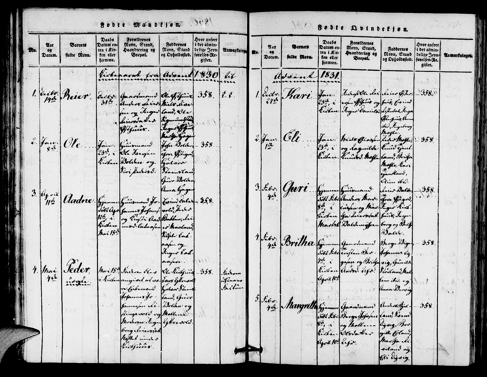

2. | born January 8th | Ole | christened January 23rd | Huusmand Ole Iversen and Siri Pedersdatter |
Witnesses John Volden, Thor Østigard, Halvor Steensland, Guro Volden, Anna Hagen | reference page 358
